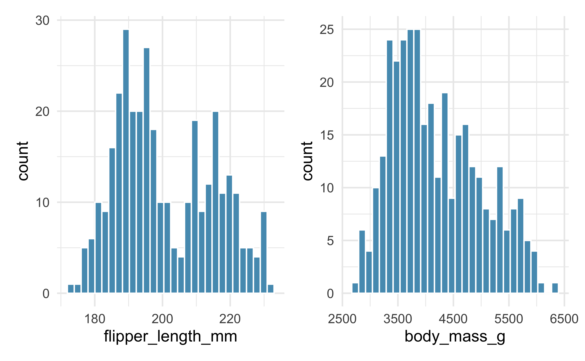
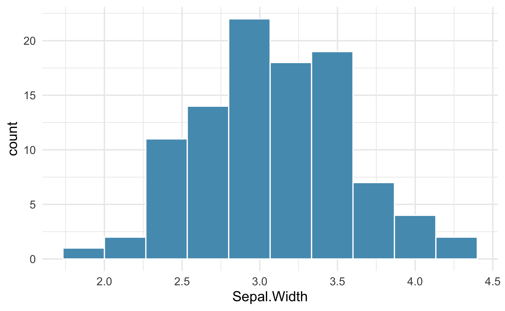

Medidas de tamanho para pinguins forrageadores adultos perto da Estação Palmer, Antártida. Inclui medidas para espécies de pinguins, ilha no Arquipélago Palmer, tamanho (comprimento da nadadeira, massa corporal, dimensões do bico) e sexo.
Formato: Um banco de dados com 344 observações e 8 variáveis
species: espécies de pinguins (Adélie, Chinstrap e Gentoo)
island: ilha no arquipélago de Palmer, Antártida (Biscoe, Dream ou Torgersen)
bill_length_mm: comprimento do bico em milímetros
flipper_length_mm: comprimento da nadadeira em milímetros
body_mass_g: massa corporal em gramas
sex: sexo do pinguin (macho ou fêmea)
year: ano em que foi realizado o estudo
Uma olhada em penguins
species
island
bill_length_mm
bill_depth_mm
flipper_length_mm
body_mass_g
sex
year
Gentoo
Biscoe
50.2
14.3
218
5700
male
2007
Adelie
Biscoe
37.6
17.0
185
3600
female
2008
Adelie
Dream
41.1
19.0
182
3425
male
2007
Gentoo
Biscoe
44.9
13.3
213
5100
female
2008
Gentoo
Biscoe
50.5
15.9
222
5550
male
2008
Adelie
Torgersen
36.7
19.3
193
3450
female
2007
Gentoo
Biscoe
47.2
15.5
215
4975
female
2009
Adelie
Biscoe
38.2
18.1
185
3950
male
2007
Chinstrap
Dream
50.2
18.8
202
3800
male
2009
Adelie
Torgersen
40.9
16.8
191
3700
female
2008
Tabela 1: Uma amostra aleatória de dez casos do banco de dados penguins
iris
Este famoso banco de dados fornece as medidas em centímetros das variáveis comprimento e largura da sépala e comprimento e largura da pétala, respectivamente, para 50 flores de cada uma das 3 espécies de íris. As espécies são setosa, versicolor e virginica.
Formato: Um banco de dados com 150 observações e 5 variáveis
Sepal.Length: comprimento da sépala
Sepal.Width: largura da sépala
Petal.Length: comprimento da pétala
Petal.Width: largura da pétala
Species: espécie (setosa, versicolor, and virginica)
Uma olhada em iris
Sepal.Length
Sepal.Width
Petal.Length
Petal.Width
Species
4.4
3.2
1.3
0.2
setosa
6.1
2.6
5.6
1.4
virginica
5.4
3.4
1.5
0.4
setosa
5.6
2.5
3.9
1.1
versicolor
4.4
2.9
1.4
0.2
setosa
4.9
3.1
1.5
0.1
setosa
6.5
3.0
5.5
1.8
virginica
5.4
3.9
1.3
0.4
setosa
5.1
3.7
1.5
0.4
setosa
5.6
2.7
4.2
1.3
versicolor
Tabela 2: Uma amostra aleatória de dez casos do banco de dados iris
Usos da regressão
Examinar o efeito de diferentes variáveis (preditoras / independentes) em uma única variável de resultado (dependente)
O uso o termo predição é essencial, pois a análise examina se uma variável prediz (explica ou repercute em) outra variável
A linha de regressão
A linha de regressão
\[
y = a + bx
\]
y = VI
x = VD
a = constante (local onde a linha intercepta o eixo y, ou seja, onde x = 0)
b = inclinação da linha (cada vez que “x” aumenta 1 unidade, “y” aumenta “b” unidades)
A linha de regressão
x
y
0
2
1
4
2
6
3
8
4
10
Tabela 3: Valores de x e y para a linha de regressão
Quais os valores de a e b para esta linha de regressão?
. . .
a = 2
. . .
b = 2
Correlação X Regressão
Correlação
Magnitude e direção
Regressão
Descobrir o tamanho do efeito de uma variável \(x\) (independente, previsora ou explicativa) em uma variável \(y\) (dependente, critério ou desfecho)
Uma variável independente contínua
Pergunta de partida
Quanto a massa corporal dos pinguins (body_mass_g) pode variar em função do comprimento da nadadeira (flipper_length_mm)?
Análise de dados exploratória
Estatísticas e Gráficos
Estatística descritiva
Mínimo
Máximo
Média
Desvio padrão
Histogramas
Estatística Bivariada
Gráfico de dispersão
Correlação
Estatísticas descritivas
Variável
N
NAs
Média
Desvio padrão
Mínimo
Máximo
flipper_length_mm
344
2
200.92
14.06
172
231
body_mass_g
344
2
4201.75
801.95
2700
6300
Tabela 4: Estatísticas univariadas para o comprimento da nadadeira e a massa corporal
Histogramas

Coeficiente de correlação
flipper_length_mm
body_mass_g
flipper_length_mm
1
body_mass_g
.87*
1
t = 32.72; r² = 0.76
*Nota. p < .001
Tabela 5: Correlação entre a massa corporal e o comprimento da nadadeira dos pinguins
O que sabemos até agora sobre a relação entre o comprimento da nadadeira e a massa corporal dos pinguins?
A partir do gráfico de dispersão e do teste de correlação de pearson, o que podemos dizer sobre a nossa equação?
b tem uma inclinação positiva!
Pinguins com com nadadeiras maiores tendem a ter maior massa corporal
Questões para a regressão
\[
\hat{y} = a + bx
\]
Qual o valor numérico para a incliação (slope) b?
E o valor do intercepto a?
Vamos utilizar a regressão linear simples para obter essas respostas
Por que colocamos um “chapéu” (acento circunflexo) em cima do \(y\)? É uma forma de notação comumente usada em regressão para indicar que temos um “valor ajustado”, ou o valor de \(y\) na linha de regressão para um dado valor de \(x\).
A tabela e a equação da regressão
Tabela da regressão
Preditor
Estimativa
Erro padrão
t
p
Intercepto
-5780.83
305.81
-18.90
< .001
flipper_length_mm
49.69
1.52
32.72
< .001
r² = 0.76
Tabela 6: Tabela de regressão linear simples - VI contínua
Neste caso, o intercepto da linha de regressão tem uma interpretação matemática, mas ele não tem nenhuma interpretação prática, pois observar um valor de flipper_length_mm igual a 0 é impossível.
O sinal de b é positivo, portanto há uma relação positiva entre as variáveis
Quanto maior a pontuação em flipper_length_mm maior a pontuação em body_mass_g
Ou seja: um tamanho maior da nadadeira está associado a maior massa corporal dos pinguins
Interpretação do valor de b (estimativa de flipper_length_mm):
O coeficiente associado ao comprimento da nadadeira é 49.7. Isso significa que, para cada aumento de 1 mm no comprimento da nadadeira, o peso dos pinguins aumenta em média 49.7 gramas
Valores observados, valores ajustados (previstos) e os resíduos
Valores observados, valores ajustados (previstos) e os resíduos
id
body_mass_g
flipper_length_mm
Valores previstos
Resíduos
1
3750
181
3212.256
537.744
2
3800
186
3460.684
339.316
3
3250
195
3907.854
−657.854
5
3450
193
3808.483
−358.483
6
3650
190
3659.426
−9.426
7
3625
181
3212.256
412.744
8
4675
195
3907.854
767.146
9
3475
193
3808.483
−333.483
10
4250
190
3659.426
590.574
Tabela 7: Tabela com valores observados, valores previstos e os resíduos
Coeficiente de Determinação (\(R^2\))
O coeficiente de determinação (\(R^2\)) mede a proporção da variância da variável dependente (\(y\)) que é explicada pela variável independente (\(x\)) no modelo de regressão
Interpretação:
Um valor de \(R^2\) próximo a 1 indica que uma grande parte da variabilidade de \(y\) é explicada pelo modelo
Um valor próximo a 0 indica que o modelo explica muito pouco da variabilidade de \(y\)
No contexto da regressão linear simples:
\(R^2\) também é o quadrado do coeficiente de correlação de Pearson (\(r\)) entre \(x\) e \(y\)
No modelo ajustado para os pinguins, se \(R^2 = 0.76\), isso indica que 76% da variação na massa corporal dos pinguins é explicada pelo comprimento da nadadeira
É fundamental para comparar diferentes modelos em termos de poder explicativo
Correlação e regressão linear simples
Preditor
Estimativa
Erro padrão
t
p
Intercepto
-5780.83
305.81
-18.90
< .001
flipper_length_mm
49.69
1.52
32.72
< .001
r² = 0.76
flipper_length_mm
body_mass_g
flipper_length_mm
1
body_mass_g
.87*
1
t = 32.72; r² = 0.76
*Nota. p < .001
Uma variável independente categórica
Pergunta de partida
Quanto a lárgura da sépala (Sepal.Width) pode variar em função da espécie de flor (Species)? Inicialmente, vamos trabalhar somente com as espécies versicolor e setosa.
Análise de dados exploratória
Estatísticas e Gráficos
Estatística descritiva
Variável Dependente (contínua)
Mínimo
Máximo
Média
Desvio padrão
Histograma
Variável independente (categórica)
Tabela de frequência
Gráfico de barras
Estatística Bivariada
Boxplot
Tabelas para compração entre grupos
Teste T para amostras independentes (VI dicotômica)
Estatísticas descritivas
Variável
N
NAs
Média
Desvio padrão
Mínimo
Máximo
Sepal.Width
100
0
3.10
0.48
2
4.4
Tabela 8: Estatísticas univariadas para a largura da sépala
Histograma

Tabela de frequência e gráfico de barras
Species
n
%
setosa
50
50.0%
versicolor
50
50.0%
Gráfico de caixa
Comparação entre grupos
Species
N
NAs
Média
Desvio padrão
Mínimo
Máximo
versicolor
50
0
2.77
0.31
2.0
3.4
setosa
50
0
3.43
0.38
2.3
4.4
Diferença entre as Médias
Species
Média
Diferença
versicolor
2.77
-
setosa
3.43
0.66
Tabela 9: Diferença entre as médias de versicolor e setosa
Teste T para amostras independentes
Estatística
gl
p
Sepal.Width
t de Student
9.455
98
< .001
O que sabemos até agora sobre a relação entre as espécies de flor e a lárgura da sépala?
A partir do gráfico de caixa e do teste de t para amostras independentes, o que podemos dizer sobre a nossa equação?
Há uma diferença entre as médias das espécies setosa e versicolor!
Flores da espécie setosa tem, em média, sépalas mais largas
A tabela e a equação da regressão
Tabela da regressão
Preditor
Estimativa
Erro padrão
t
p
Intercepto
3.43
0.05
69.66
< .001
Speciesversicolor
-0.66
0.07
-9.45
< .001
r² = 0.48
Tabela 10: Tabela de regressão linear simples - VI categórica
Interpretando a tabela da regressão
Preditor
Estimativa
Erro padrão
t
p
Intercepto
3.43
0.05
69.66
< .001
Speciesversicolor
-0.66
0.07
-9.45
< .001
r² = 0.48
\[
\hat{y} = a + bx
\]
Estimativas
a \(=\) Estimativa do Intercepto \(= 3.43\)
Intercepto \(=\) média da categoria de referência (setosa)
b = Estimativa de Speciesversicolor\(= -0.66\)
b \(=\) Diferença entre a média de versicolor e a média da categoria de referência (setosa)
Média de versicolor \(= Intercepto + b\)
Média de versicolor \(= 3.43 + (-0.66)\)\(= 2.77\)
Um \(R^2\) elevado não garante que o modelo seja o melhor para prever ou explicar os dados. A análise dos resíduos e outros critérios de ajuste devem ser considerados.↩︎
Código fonte
---title: "Regressão linear simples"subtitle: "Em construção"format: revealjs: logo: img/brasao1_horizontal_cor_300dpi.png code-link: true code-tools: true code-line-numbers: false theme: simple echo: false message: false warning: false css: logo.cssprogress: trueslide-number: trueeditor: visualeditor_options: chunk_output_type: console---```{r}#| include: falsesource("./_common.R")``````{r}#| label: setuplibrary(tidyverse)library(janitor)library(palmerpenguins)library(gt)library(patchwork)library(broom)library(ggthemes)library(corrr)conflicted::conflicts_prefer(dplyr::filter())conflicted::conflicts_prefer(dplyr::select())conflicted::conflicts_prefer(dplyr::lag())conflicted::conflicts_prefer(dplyr::summarize)conflicted::conflicts_prefer(dplyr::summarise)conflicted::conflicts_prefer(scales::alpha)conflicted::conflicts_prefer(scales::rescale)``````{r}#| label: datairis_filter <- iris |>as_tibble() |>filter(Species !="virginica")```## O que vamos aprender?# Bancos de dados utilizados## {background-image="img/pinguins.png" background-size="contain"}## `penguins` {.smaller}Medidas de tamanho para pinguins forrageadores adultos perto da Estação Palmer, Antártida. Inclui medidas para espécies de pinguins, ilha no Arquipélago Palmer, tamanho (comprimento da nadadeira, massa corporal, dimensões do bico) e sexo.- Formato: Um banco de dados com `r nrow(penguins)` observações e `r ncol(penguins)` variáveis - `species`: espécies de pinguins (Adélie, Chinstrap e Gentoo) - `island`: ilha no arquipélago de Palmer, Antártida (Biscoe, Dream ou Torgersen) - `bill_length_mm`: comprimento do bico em milímetros - `flipper_length_mm`: comprimento da nadadeira em milímetros - `body_mass_g`: massa corporal em gramas - `sex`: sexo do pinguin (macho ou fêmea) - `year`: ano em que foi realizado o estudo## Uma olhada em `penguins````{r}#| label: tbl-penguins#| tbl-cap: Uma amostra aleatória de dez casos do banco de dados `penguins`#| tbl-cap-location: bottompenguins |>slice_sample(n =10) |>gt() |>cols_align(align ="center" ) |>tab_options(table.width =pct(100),table.font.size ="22px" ) |>opt_stylize(style =1, color ="gray" )```## {background-image="img/iris.png" background-size="contain"}## `iris` {.smaller}Este famoso banco de dados fornece as medidas em centímetros das variáveis comprimento e largura da sépala e comprimento e largura da pétala, respectivamente, para 50 flores de cada uma das 3 espécies de íris. As espécies são setosa, versicolor e virginica.- Formato: Um banco de dados com `r nrow(iris)` observações e `r ncol(iris)` variáveis - `Sepal.Length`: comprimento da sépala - `Sepal.Width`: largura da sépala - `Petal.Length`: comprimento da pétala - `Petal.Width`: largura da pétala - `Species`: espécie (setosa, versicolor, and virginica)## Uma olhada em `iris````{r}#| label: tbl-iris#| tbl-cap: Uma amostra aleatória de dez casos do banco de dados `iris`#| tbl-cap-location: bottomiris |>slice_sample(n =10) |>gt() |>cols_align(align ="center" ) |>tab_options(table.width =pct(100),table.font.size ="22px" ) |>opt_stylize(style =1, color ="gray" )```## Usos da regressão- Examinar o efeito de diferentes variáveis (preditoras / independentes) em uma única variável de resultado (dependente)- O uso o termo predição é essencial, pois a análise examina se uma variável prediz (explica ou repercute em) outra variável## A linha de regressão```{r}x <-c(0,1,2,3,4)y <-2+2*xreg_line <-tibble(x,y)``````{r}reg_line |>ggplot(aes(x,y) ) +geom_smooth(method ="lm", se = F,color ="#F05133", linetype =2 ) +geom_point(color ="#569BBD", alpha =0.6,size =3 )```## A linha de regressão$$y = a + bx$$- y = VI- x = VD- a = constante (local onde a linha intercepta o eixo y, ou seja, onde x = 0)- b = inclinação da linha (cada vez que "x" aumenta 1 unidade, "y" aumenta "b" unidades)## A linha de regressão```{r}#| label: tbl-linha-de-regressao#| tbl-cap: Valores de x e y para a linha de regressão#| tbl-cap-location: bottomreg_line |>gt() |>cols_align(align ="center" ) |>tab_options(table.width =pct(100),table.font.size ="26px" ) |>opt_stylize(style =1, color ="gray" )```Quais os valores de a e b para esta linha de regressão?. . .a = 2. . .b = 2## Correlação X Regressão {.smaller}- Correlação - Magnitude e direção- Regressão - Descobrir o tamanho do efeito de uma variável $x$ (independente, previsora ou explicativa) em uma variável $y$ (dependente, critério ou desfecho)# Uma variável independente contínua## Pergunta de partidaQuanto a massa corporal dos pinguins (`body_mass_g`) pode variar em função do comprimento da nadadeira (`flipper_length_mm`)?# Análise de dados exploratória## Estatísticas e Gráficos {.smaller}- Estatística descritiva - Mínimo - Máximo - Média - Desvio padrão - Histogramas- Estatística Bivariada - Gráfico de dispersão - Correlação## Estatísticas descritivas {.smaller}```{r}#| label: tbl-univariadas-penguins#| tbl-cap: Estatísticas univariadas para o comprimento da nadadeira e a massa corporal#| tbl-cap-location: bottompenguins |>summarise(across(c(flipper_length_mm, body_mass_g),list(N = \(x) n(),NAs = \(x) sum(is.na(x)), Média = \(x) mean(x, na.rm = T),"Desvio padrão"= \(x) sd(x, na.rm = T), Mínimo = \(x) min(x, na.rm = T), Máximo = \(x) max(x, na.rm = T) )) ) |>pivot_longer(cols =everything(),names_to =c("Variável", ".value"),names_sep ="_(?=[^_]+$)" ) |>gt() |>cols_align(align ="center" ) |>fmt_number(columns =c("Média", "Desvio padrão"),decimals =2, use_seps = F ) |>tab_style_body(style =cell_text(align ="left"),values =c("flipper_length_mm", "body_mass_g") ) |>tab_options(table.width =pct(100),table.font.size ="26px" ) |>opt_stylize(style =1, color ="gray" )```## Histogramas {.smaller}```{r}hist_penguins_flipper <- penguins |>ggplot(aes(flipper_length_mm) ) +geom_histogram(fill ="#569BBD",color ="#FFFFFF" ) hist_penguins_body_mass <- penguins |>ggplot(aes(body_mass_g) ) +geom_histogram(fill ="#569BBD",color ="#FFFFFF" )hist_penguins_flipper + hist_penguins_body_mass```## ```{r}#| out-width: 70%penguins |>ggplot(aes(flipper_length_mm, body_mass_g) ) +geom_jitter(color ="#569BBD", alpha =0.6,size =3 ) +geom_smooth(method ="lm", se = F,color ="#F05133",linetype =2 ) +labs(title ="Gráfico de dispersão da relação\nentre massa corporal e comprimento da nadadeira" ) +theme(plot.title =element_text(hjust =0.5) )```## Coeficiente de correlação {.smaller}```{r}#| label: tbl-cor-bmass-flipper#| tbl-cap: Correlação entre a massa corporal e o comprimento da nadadeira dos pinguins#| tbl-cap-location: bottomstats_cor_bmass_flipper <-cor.test(penguins$flipper_length_mm, penguins$body_mass_g) t_cor_b_mass_flipper <-round(stats_cor_bmass_flipper$statistic[[1]],2)t_cor_b_mass_flipper <-str_c("t = ", t_cor_b_mass_flipper) r_sqrt_b_mass_flipper <-round(stats_cor_bmass_flipper$estimate[[1]]^2,2)r_sqrt_b_mass_flipper <-str_c("r² = ", r_sqrt_b_mass_flipper) t_r_cor_bmass_flipper <-str_c(t_cor_b_mass_flipper, r_sqrt_b_mass_flipper, sep ="; ") tbl_matrix_cor_bmass_flipper <- penguins |>select(flipper_length_mm, body_mass_g) |>drop_na() |>correlate(diagonal =1) |>shave() |>gt() |>cols_align(align ="center", columns =c(2,3) ) |>cols_label(term ="" ) |>fmt_number(decimals =2, drop_trailing_zeros = T ) |>sub_missing(missing_text ="") |>text_transform(locations =cells_body(columns =2, rows =2),fn =function(x) {sub("^0\\.", ".", x) } ) |>tab_footnote(locations =cells_body(columns =2, rows =2), footnote =md("*Nota. p* < .001"),placement ="right" ) |>opt_footnote_marks(marks ="extended" ) |>tab_source_note(source_note = t_r_cor_bmass_flipper ) |>tab_options(table.width =pct(100),table.font.size ="26px" ) |>opt_stylize(style =1, color ="gray" ) |>tab_style(locations =list(cells_stub()),style =list(cell_fill(color ="white"), cell_text(color ="black") ) )tbl_matrix_cor_bmass_flipper```## O que sabemos até agora sobre a relação entre o comprimento da nadadeira e a massa corporal dos pinguins? {.smaller}- A partir do gráfico de dispersão e do teste de correlação de pearson, o que podemos dizer sobre a nossa equação? - b tem uma inclinação positiva! - Pinguins com com nadadeiras maiores tendem a ter maior massa corporal## Questões para a regressão {.smaller}$$\hat{y} = a + bx$$- Qual o valor numérico para a incliação (slope) *b*?- E o valor do intercepto *a*?- Vamos utilizar a regressão linear simples para obter essas respostas::: asidePor que colocamos um “chapéu” (acento circunflexo) em cima do $y$? É uma forma de notação comumente usada em regressão para indicar que temos um “valor ajustado”, ou o valor de $y$ na linha de regressão para um dado valor de $x$.:::# A tabela e a equação da regressão## Tabela da regressão```{r}#| label: tbl-reg-bmass-flipper#| tbl-cap: "Tabela de regressão linear simples - VI contínua"#| tbl-cap-location: bottommodelo_reg_simples_cont <-lm(body_mass_g ~ flipper_length_mm, data = penguins)nomes_tabela_regressao <-c("Preditor", "Estimativa","Erro padrão", "t", "p")tabela_modelo_reg_simples_cont <- modelo_reg_simples_cont |>tidy() |>mutate(across(where(is.double), \(x) round(x, 2)),term =case_when(term =="(Intercept)"~"Intercepto",.default = term) ) |>rename_with(~nomes_tabela_regressao) |>gt() |>sub_values(columns =5,fn =function(x) x ==0 , replacement ="< .001" ) |>cols_align(align ="center" ) |>tab_source_note(source_note = r_sqrt_b_mass_flipper ) |>tab_style_body(style =cell_text(align ="left"),values =c("flipper_length_mm", "Intercepto") ) |>tab_options(table.width =pct(100),table.font.size ="22px" ) |>opt_stylize(style =1, color ="gray" )tabela_modelo_reg_simples_cont```## Interpretando a tabela da regressão {.smaller}```{r}a_cont <- modelo_reg_simples_cont$coefficients[[1]]a_cont <-round(a_cont, 3)b_cont <- modelo_reg_simples_cont$coefficients[[2]]b_cont <-round(b_cont, 3)``````{r}tabela_modelo_reg_simples_cont```$$\hat{y} = a + bx$$- Estimativas - a = Estimativa do Intercepto = `r a_cont` - b = Estimativa de `flipper_length_mm` = `r b_cont`$$\hat{body\_mass\_g} = `r a_cont` + `r b_cont` * flipper\_length\_mm$$::: asideNeste caso, o intercepto da linha de regressão tem uma interpretação matemática, mas ele não tem nenhuma interpretação prática, pois observar um valor de `flipper_length_mm` igual a 0 é impossível.:::## Interpretando a equação da regressão$$body\_mass\_g = `r a_cont` + `r b_cont` * flipper\_length\_mm$$::: {style="line-height: 1; font-size: 18pt"}- Quais conclusões podemos tirar dessa equação? - O sinal de b é positivo, portanto há uma relação positiva entre as variáveis - Quanto maior a pontuação em `flipper_length_mm` maior a pontuação em `body_mass_g` - Ou seja: um tamanho maior da nadadeira está associado a maior massa corporal dos pinguins - Interpretação do valor de b (estimativa de `flipper_length_mm`): - O coeficiente associado ao comprimento da nadadeira é 49.7. Isso significa que, para cada aumento de 1 mm no comprimento da nadadeira, o peso dos pinguins aumenta em média 49.7 gramas:::## Valores observados, valores ajustados (previstos) e os resíduos {.smaller}$$body\_mass\_g = `r a_cont` + `r b_cont`*flipper\_length\_mm$$```{r}penguins |>mutate(id =1:n() ) |>select(id, body_mass_g, flipper_length_mm) |>slice_head(n =1) |>gt() |>cols_align(align ="center" ) |>tab_options(table.width =pct(100),table.font.size ="22px" ) |>opt_stylize(style =1, color ="gray" )a <- modelo_reg_simples_cont$coefficients[[1]]b <- modelo_reg_simples_cont$coefficients[[2]]x <- penguins[[1, 5]]ajustado <- a + b*xobservado <- penguins[[1, 6]]residuo <- observado - ajustado```- Valor observado de body_mass_g = $`r observado`$- Valor ajustado/previsto - $body\_mass\_g = `r round(a, 3)` + `r round(b, 3)`* `r x`$ - $body\_mass\_g = `r round(ajustado, 3) `$- $\text{Resíduo} = \text{valor observado} - \text{valor ajustado}$ - $\text{Resíduo} = `r observado` - `r round(ajustado, 3)`$ - $\text{Resíduo} = `r round(residuo, 3)`$## ```{r}#| out-width: 70%modelo_reg_simples_cont |>augment() |>ggplot(aes(flipper_length_mm, body_mass_g) ) +geom_point(color ="#569BBD", alpha =0.6,size =3 ) +geom_point(data = penguins |>filter(flipper_length_mm ==172), aes(flipper_length_mm, body_mass_g), shape =23, size =5, color ="gray", stroke =1.5) +geom_point(data = penguins |>filter(flipper_length_mm ==216, body_mass_g ==4100), aes(flipper_length_mm, body_mass_g), shape =1, size =5, color ="red", stroke =1.5) +geom_smooth(method ="lm", se = F,color ="#F05133",linetype =2 ) +annotate("segment",x =171.9, xend =171.9,y =2765, yend =3050, color ="gray",linewidth =1 ) +annotate("segment",x =216, xend =216,y =4951, yend =4120, color ="#F05133",linewidth =1 ) +labs(title ="Gráfico de diserpesão da relação\nentre massa corporal e comprimento da nadadeira",subtitle ="Resíduos realçados" ) +theme(plot.title =element_text(hjust =0.5),plot.subtitle =element_text(hjust =0.5) )```## Valores observados, valores ajustados (previstos) e os resíduos {.smaller}```{r}#| label: tbl-ajust-resid-cont#| tbl-cap: "Tabela com valores observados, valores previstos e os resíduos"#| tbl-cap-location: bottommodelo_reg_simples_cont |>augment() |>select(id = .rownames, body_mass_g, flipper_length_mm, "Valores previstos"= .fitted,"Resíduos"= .resid ) |>slice_head(n =9) |>gt() |>cols_align(align ="center" ) |>fmt_number(columns =c(4,5),decimals =3, use_seps = F ) |>tab_options(table.width =pct(100),table.font.size ="22px" ) |>opt_stylize(style =1, color ="gray" )```## Coeficiente de Determinação ($R^2$) {.smaller}O coeficiente de determinação ($R^2$) mede a proporção da variância da variável dependente ($y$) que é explicada pela variável independente ($x$) no modelo de regressão- Interpretação: - Um valor de $R^2$ próximo a 1 indica que uma grande parte da variabilidade de $y$ é explicada pelo modelo - Um valor próximo a 0 indica que o modelo explica muito pouco da variabilidade de $y$- No contexto da regressão linear simples: - $R^2$ também é o quadrado do coeficiente de correlação de Pearson ($r$) entre $x$ e $y$ - No modelo ajustado para os pinguins, se $R^2 = 0.76$, isso indica que 76% da variação na massa corporal dos pinguins é explicada pelo comprimento da nadadeira## Importância do $R^2$:- Ajuda a avaliar a qualidade do ajuste do modelo [^1]- É fundamental para comparar diferentes modelos em termos de poder explicativo[^1]: Um $R^2$ elevado não garante que o modelo seja o melhor para prever ou explicar os dados. A análise dos resíduos e outros critérios de ajuste devem ser considerados.## Correlação e regressão linear simples```{r}tabela_modelo_reg_simples_conttbl_matrix_cor_bmass_flipper```# Uma variável independente categórica## Pergunta de partidaQuanto a lárgura da sépala (`Sepal.Width`) pode variar em função da espécie de flor (`Species`)? Inicialmente, vamos trabalhar somente com as espécies versicolor e setosa.# Análise de dados exploratória## Estatísticas e Gráficos {.smaller}::: {style="line-height: 1;"}- Estatística descritiva - Variável Dependente (contínua) - Mínimo - Máximo - Média - Desvio padrão - Histograma - Variável independente (categórica) - Tabela de frequência - Gráfico de barras- Estatística Bivariada - Boxplot - Tabelas para compração entre grupos - Teste T para amostras independentes (VI dicotômica):::## Estatísticas descritivas {.smaller}```{r}#| label: tbl-univariadas-irs#| tbl-cap: Estatísticas univariadas para a largura da sépala#| tbl-cap-location: bottomvariavel <-tribble(~Variável,"Sepal.Width")iris_filter |>summarise(N =n(),NAs =sum(is.na(Sepal.Width)), Média =mean(Sepal.Width),"Desvio padrão"=sd(Sepal.Width), Mínimo =min(Sepal.Width), Máximo =max(Sepal.Width) ) |>add_column(variavel, .before =1) |>gt() |>cols_align(align ="center" ) |>fmt_number(columns =c("Média", "Desvio padrão"),decimals =2 ) |>tab_style_body(style =cell_text(align ="left"),values ="Sepal.Width" ) |>tab_options(table.width =pct(100),table.font.size ="26px" ) |>opt_stylize(style =1, color ="gray" )```## Histograma```{r}iris_filter |>ggplot(aes(Sepal.Width) ) +geom_histogram(bins =10,fill ="#569BBD",color ="#FFFFFF" ) ```## Tabela de frequência e gráfico de barras::::: columns::: {.column width="50%"}```{r}iris_filter |>count(Species) |>mutate("%"= n/sum(n) ) |>gt() |>cols_align(align ="center" ) |>fmt_number(decimals =0, ) |>fmt_percent(columns =3, decimals =1 ) |>tab_options(table.width =pct(100),table.font.size ="22px" ) |>opt_stylize(style =1, color ="gray" )```:::::: {.column width="50%"}```{r}iris_filter |>ggplot(aes(Species, fill = Species) ) +geom_bar() +scale_fill_colorblind() +theme(legend.position ="none" )```::::::::## Gráfico de caixa```{r}iris_filter |>ggplot(aes(Sepal.Width, fct_reorder(Species, Sepal.Width, mean)) ) +geom_boxplot(color ="#569BBD") +stat_boxplot(geom='errorbar' , width =0.3 ) +labs(y ="Species" )```## Comparação entre grupos```{r}iris_filter |>summarise(N =n(),NAs =sum(is.na(Sepal.Width)), Média =mean(Sepal.Width),"Desvio padrão"=sd(Sepal.Width), Mínimo =min(Sepal.Width), Máximo =max(Sepal.Width),.by = Species ) |>arrange(Média) |>gt() |>cols_align(align ="center" ) |>fmt_number(columns =c("Média", "Desvio padrão"),decimals =2 ) |>tab_style_body(style =cell_text(align ="left"),values =c("setosa", "virginica","versicolor") ) |>tab_options(table.width =pct(100),table.font.size ="26px" ) |>opt_stylize(style =1, color ="gray" )```## Diferença entre as Médias```{r}#| label: tbl-diferenca-medias#| tbl-cap: Diferença entre as médias de versicolor e setosa#| tbl-cap-location: bottomiris_filter |>summarise( Média =mean(Sepal.Width),.by = Species ) |>arrange(Média) |>mutate( Diferença = Média -lag(Média) ) |>gt() |>cols_align(align ="center" ) |>fmt_number(columns =c("Média", "Diferença"),decimals =2 ) |>sub_missing(missing_text ="-" ) |>tab_style_body(style =cell_text(align ="left"),values =c("setosa", "virginica","versicolor") ) |>tab_options(table.width =pct(100),table.font.size ="26px" ) |>opt_stylize(style =1, color ="gray" )```## Teste T para amostras independentes```{r}t.test(Sepal.Width ~ Species, data = iris_filter) |>tidy() |>select( Estatística = statistic, p = p.value ) |>mutate( Variável ="Sepal.Width",teste ="t de Student",gl =98,p ="< .001" ) |>relocate(c("Variável", "teste"),.before =1) |>relocate(gl, .before = p) |>gt() |>cols_align(align ="center" ) |>cols_label( Variável ="",teste ="" ) |>fmt_number(columns = Estatística,decimals =3 ) |>tab_style_body(style =cell_text(align ="left"),values ="Sepal.Width" ) |>tab_options(table.width =pct(100),table.font.size ="26px" ) |>opt_stylize(style =1, color ="gray" )```## O que sabemos até agora sobre a relação entre as espécies de flor e a lárgura da sépala?- A partir do gráfico de caixa e do teste de t para amostras independentes, o que podemos dizer sobre a nossa equação? - Há uma diferença entre as médias das espécies setosa e versicolor! - Flores da espécie setosa tem, em média, sépalas mais largas# A tabela e a equação da regressão## Tabela da regressão```{r}modelo_reg_simples_cat <-lm(Sepal.Width ~ Species, data = iris_filter)r_sqrt_swidth_species <- modelo_reg_simples_cat |>glance() |>select(r.squared) |>pull()r_sqrt_swidth_species <-round(r_sqrt_swidth_species, 2)r_sqrt_swidth_species <-str_c("r² = ", r_sqrt_swidth_species)``````{r}#| label: tbl-reg-swidth-species#| tbl-cap: "Tabela de regressão linear simples - VI categórica"#| tbl-cap-location: bottomtabela_modelo_reg_simples_cat <- modelo_reg_simples_cat |>tidy() |>mutate(across(where(is.double), \(x) round(x, 2)),term =case_when(term =="(Intercept)"~"Intercepto",.default = term) ) |>rename_with(~nomes_tabela_regressao) |>gt() |>sub_values(columns =5,fn =function(x) x ==0 , replacement ="< .001" ) |>cols_align(align ="center" ) |>tab_source_note(source_note = r_sqrt_swidth_species ) |>tab_style_body(style =cell_text(align ="left"),values =c("Intercepto", "Speciesversicolor") ) |>tab_options(table.width =pct(100),table.font.size ="22px" ) |>opt_stylize(style =1, color ="gray" )tabela_modelo_reg_simples_cat```## Interpretando a tabela da regressão {.smaller}```{r}a_cat <- modelo_reg_simples_cat$coefficients[[1]]a_cat <-round(a_cat, 2)b_cat <- modelo_reg_simples_cat$coefficients[[2]]b_cat <-round(b_cat, 2)``````{r}tabela_modelo_reg_simples_cat```::: {style="line-height: 1; font-size: 75%"}$$\hat{y} = a + bx$$- Estimativas - a $=$ Estimativa do Intercepto $= `r a_cat`$ - Intercepto $=$ média da categoria de referência (setosa) - b = Estimativa de `Speciesversicolor` $= `r b_cat`$ - b $=$ Diferença entre a média de versicolor e a média da categoria de referência (setosa) - Média de versicolor $= Intercepto + b$\ - Média de versicolor $= `r a_cat` + (`r b_cat`)$ $= `r a_cat + b_cat`$ - Mesmos valores exibidos na @tbl-diferenca-medias:::::: asideA categoria de referência é definida por ordem alfabética, mas esse comportamento pode ser alterado:::## Interpretando a equação da regressão$$\hat{y} = \hat{Sepal.Width} = b_0 + 1_{versicolor}(x)$$